I'm Hari Shah — Full Stack Engineer who architected Palika GIS, powering 25+ municipalities across Nepal. From processing 100K+ survey responses to real-time emergency management, digital profiles, road mapping and land cadastral systems. I Build Systems that scale, perform, and ship.
Enterprise-grade & Built to Last
Next.js · PostgreSQL · Node.js
Production systems serving real users — not demos or side projects
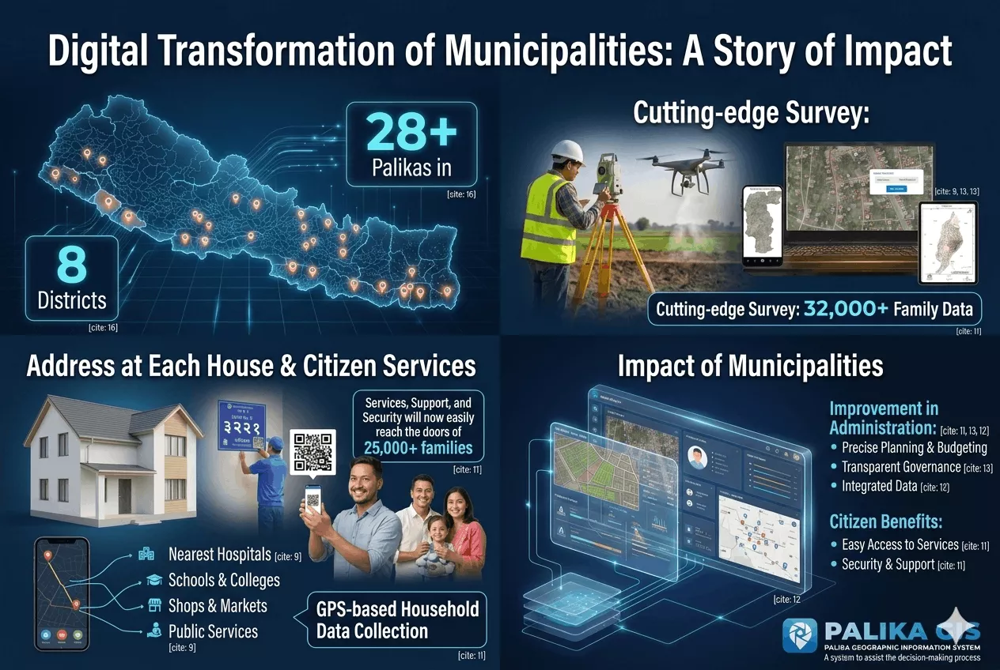
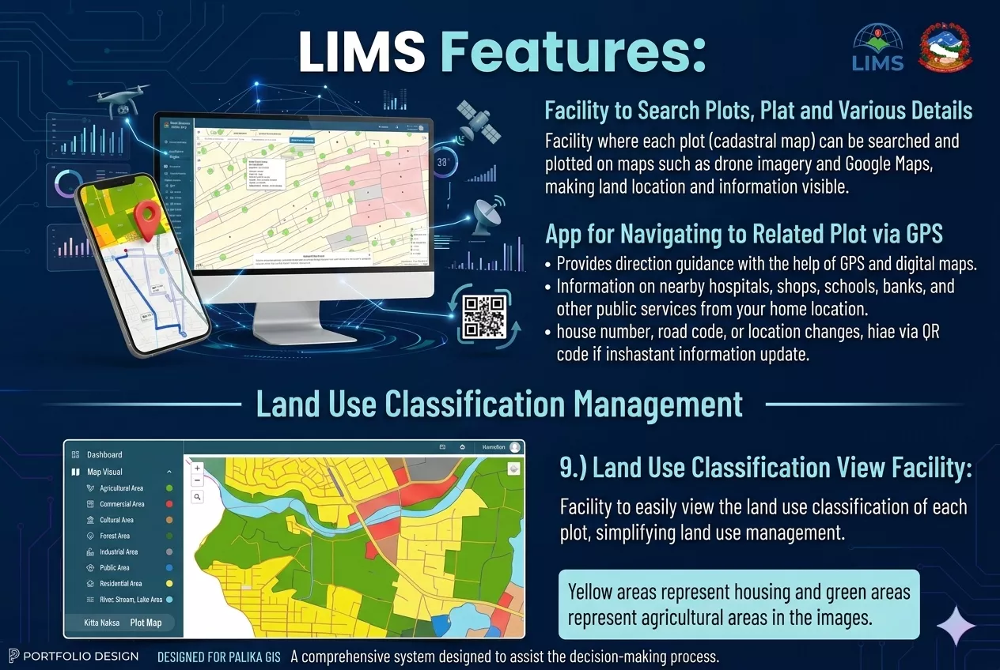
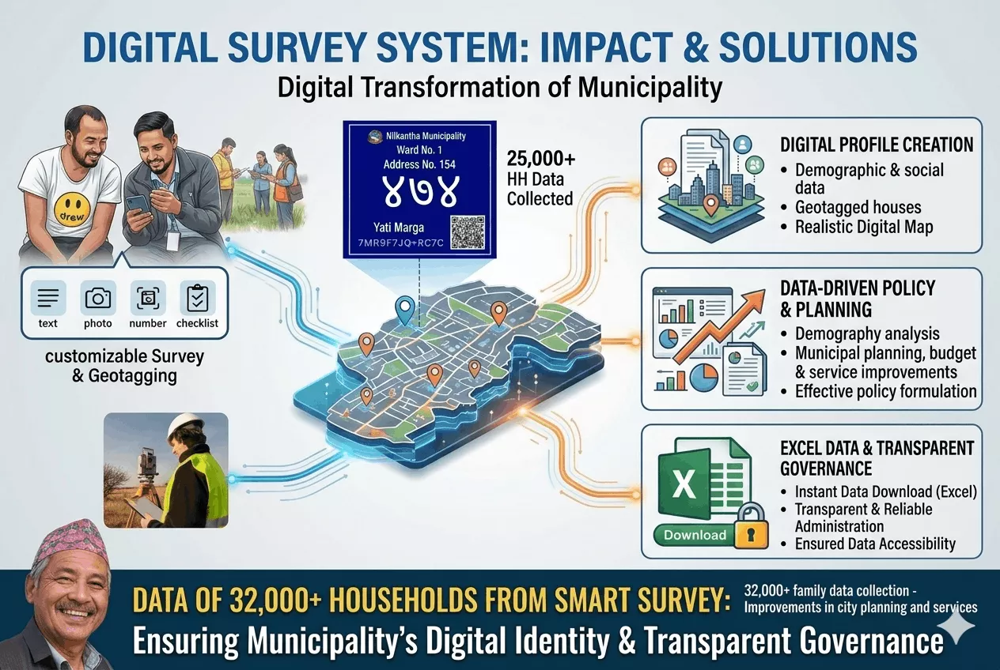
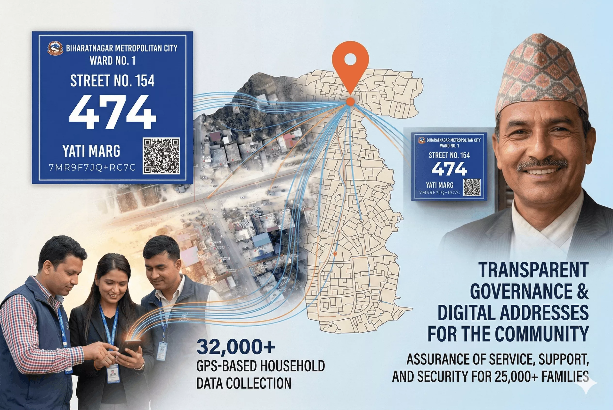
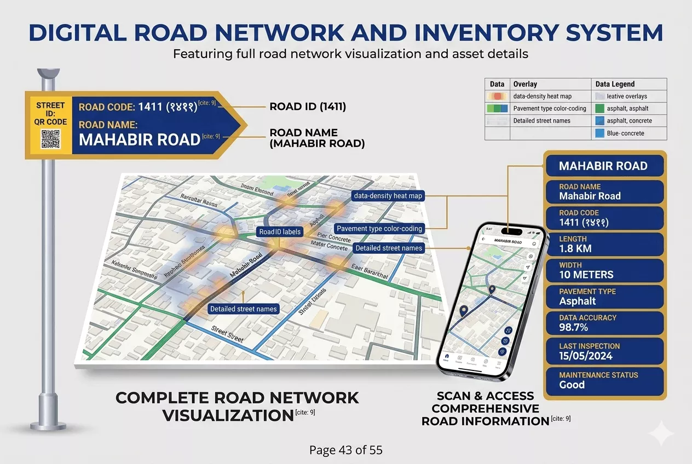
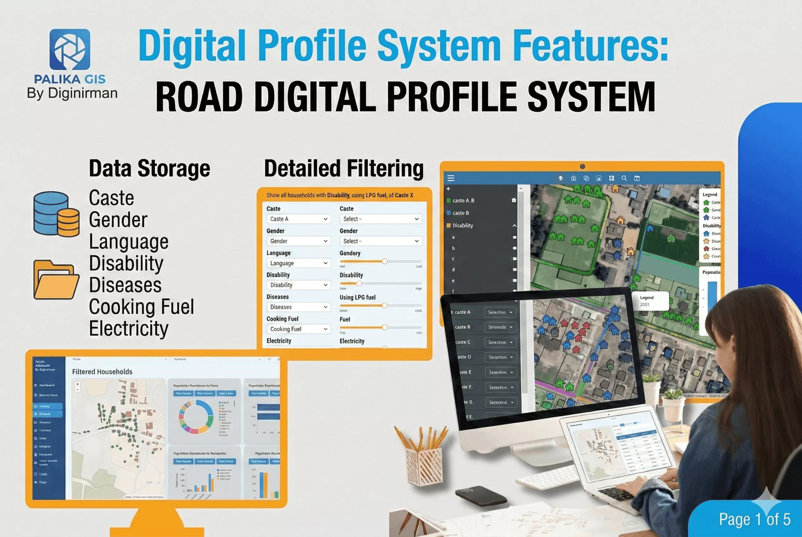
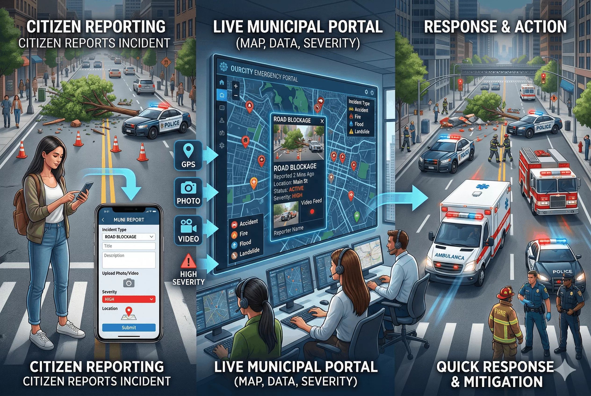
Enterprise GIS platform architected from scratch — serving 25+ municipalities across Nepal. Powers real-time emergency dispatch, algorithmic addressing, full road infrastructure mapping, geo-tagged digital surveys, and cadastral land management. Processed 100K+ survey responses.
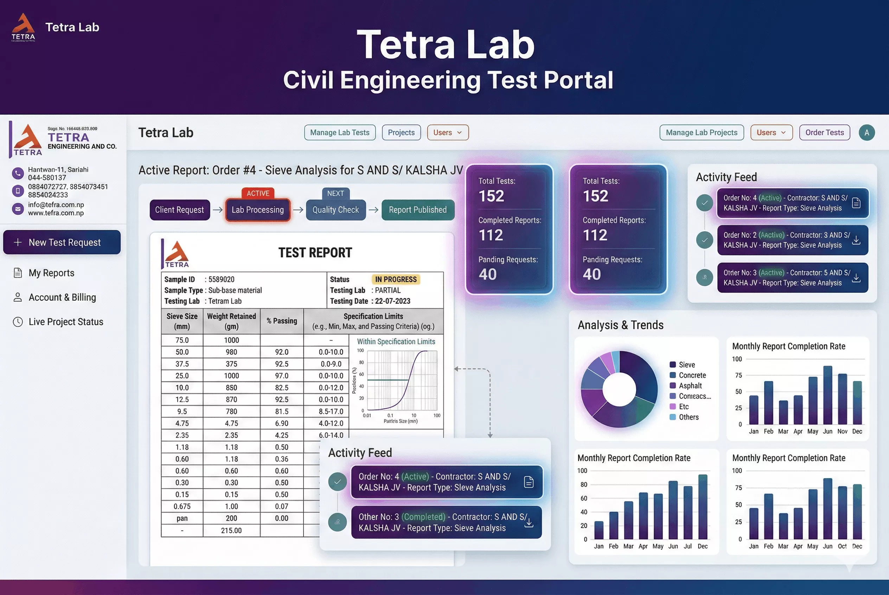
Civil lab SaaS: automated workflow from test request → lab entry → report generation → stakeholder download portal, with full RBAC and GraphQL APIs.
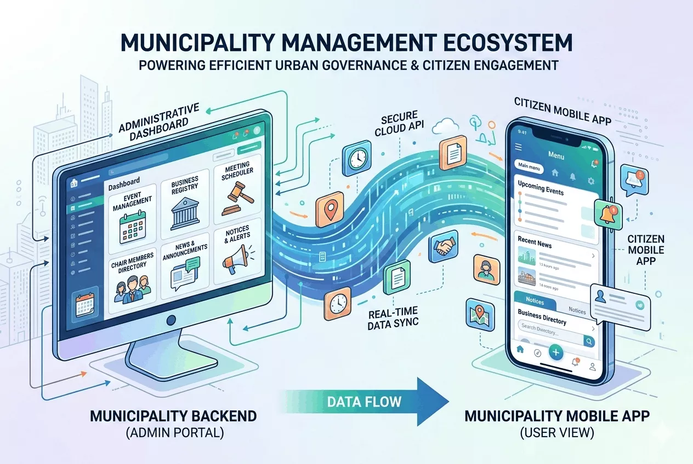
Architected a modular backend powering a unified mobile experience for multiple cities. Built to handle independent configurations for events, business registries, and official notices, it streamlines citizen engagement through a scalable, multi-client API.
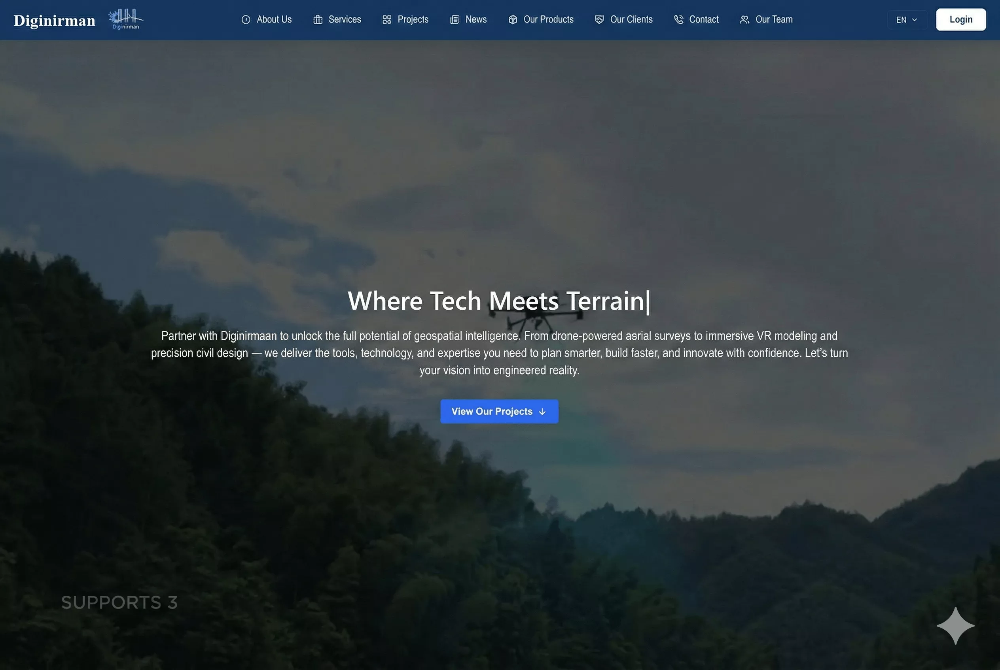
Company's flagship digital presence — designed and built from scratch. Showcases the full product portfolio, client testimonials, and services. Optimized for SEO and performance with Next.js and Tailwind CSS.
Building production systems that move the needle — from real-time emergency dispatch to enterprise SaaS
Top-ranked institutions · Gold Medal · 9.72 GPA
One of India's premier engineering institutions (NIT system). Pursuing advanced studies in CS with focus on algorithms, system design, and scalable architectures.
Graduated with highest distinction & Gold Medal
Verified professional training — 225+ hours of hands-on coursework
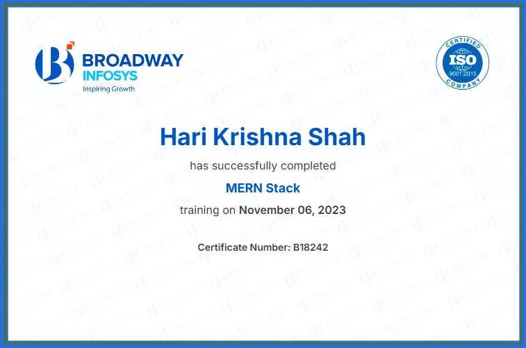
End-to-end full-stack training covering MongoDB, Express.js, React, and Node.js — building production-grade web applications from day one.
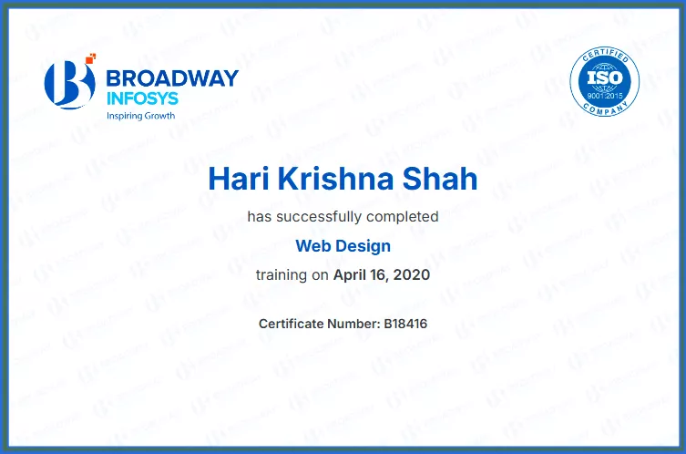
In-depth training in modern frontend development — HTML5, CSS3, JavaScript, and responsive design principles for production-ready interfaces.
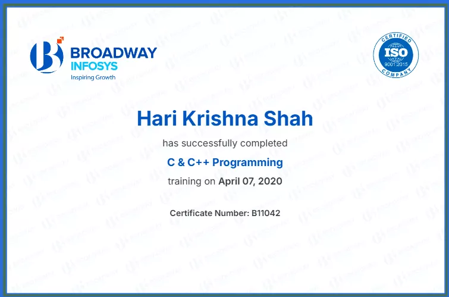
Core systems programming — memory management, pointers, data structures, and low-level problem solving building strong computer science fundamentals.
A battle-tested full-stack toolkit built through real production systems
I'm open to SDE roles, freelance collaborations, and interesting problems worth solving. If you have something in mind — let's talk.